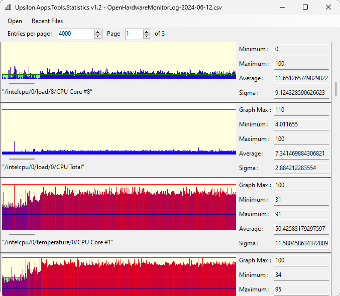

Upsilon.Apps.Passkey
A fully offline and secured Password manager. It supports multiple users, multiple accounts per service, fully customisable password generator and more.
You can download the installer here or the portable version here.
The minimalist login page
The user login and passwords setting page
The user options settings page
The custom password generator page
Previous
Next
Upsilon.Apps.Tools.BaseConverter
A tool allowing conversion of integer from any base to any other base and support Logical Operators (And, or, Not, Xor, Shift), Addition and Multiplication. The size of the number is virtually unlimited.
You can download the installer here or the portable version here
Upsilon.Apps.Tools.Statistics

This tool can display a Comma separated CSV data file as a graph with all statistic informations (Minimum, Maximum, Average, etc). Each column in the CSV will be displayed on a row in the tool.
You can download the installer here or the portable version here.
Upsilon.Apps.Tools.PowerSourceAutoBrightness
This tool changes automatically the screen brightness setting it to 100% when the power source is online and setting it to 0% when the power source is offline. It also allows to quickly toogle the screen brightness by clicking once on the notification icon.
You can download the installer here or the portable version here.